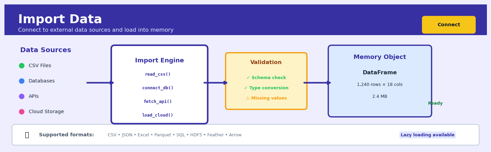

Import Data#


The biggest mistake I see is people importing entire datasets into memory when they only need a subset. Always use parameters like nrows, usecols, or chunksize in pandas, or leverage lazy evaluation with libraries like Polars or Dask. Your laptop will thank you when that 10GB CSV doesn't crash your kernel because you filtered it at import time instead of after.
Overview#
Import Data is the foundational operation in any data science workflow—the process of reading structured or semi-structured data from external sources into an analytical environment for processing, transformation, and modelling. It belongs to the family of data ingestion methods within the broader discipline of Extract-Transform-Load (ETL) and data engineering. The Import Data node in Heuristix serves as the entry point for all analytical pipelines, establishing the schema, data types, and initial data quality constraints that propagate through downstream operations.
When to Use This#
Use Import Data when:
Beginning any analytical workflow — Every analysis starts with data. Whether you are building a predictive model, generating a report, or conducting exploratory analysis, importing data is the mandatory first step that establishes your working dataset.
Connecting to flat file exports from business systems — Many enterprise systems (ERP, CRM, HRIS) export data as CSV, Excel, or JSON files. Import Data handles these common interchange formats with appropriate parsing options.
Loading historical datasets for model training — Machine learning workflows require labelled training data. Import Data brings these datasets into the platform with proper type inference and missing value handling.
Ingesting data from data lakes or cloud storage — Modern data architectures store raw data in object storage (S3, Azure Blob, GCS). Import Data connects to these sources and reads Parquet, CSV, or JSON files directly.
Processing batch uploads from external partners — When third parties provide data files on a scheduled basis (e.g., daily sales feeds, weekly inventory snapshots), Import Data provides the consistent ingestion interface.
Loading reference data and lookup tables — Static datasets like country codes, product hierarchies, or exchange rate tables need to be imported before they can be joined to transactional data.
Creating reproducible data pipelines — By parameterising the import step, you create workflows that can be re-executed as new data arrives without manual intervention.
Do NOT use Import Data when:
You need real-time streaming data — Import Data operates on batch files. For continuous data streams (IoT sensors, clickstreams, real-time transactions), use a dedicated streaming ingestion node or message queue integration.
The data source is a live database requiring SQL queries — Use the Query Database node instead, which allows you to write SQL against connected databases and brings only the required subset into the platform.
You need to merge multiple files with different schemas — Import Data reads a single source at a time. Use multiple Import Data nodes followed by transformation and join operations for schema alignment.
How It Works#
Imagine you’re a chef preparing for a dinner service. Before you can cook anything, you need to unload delivery boxes from your suppliers—one contains vegetables, another has meat, and a third holds spices. Each box has a different format: the vegetables are in plastic crates with handwritten labels, the meat arrives vacuum-sealed with printed barcodes, and the spices come in glass jars with inconsistent labeling. Your first job isn’t cooking—it’s unpacking these boxes, checking what’s actually inside, organizing everything onto your prep station with consistent labels, and making sure nothing is spoiled. Only after this receiving process can you start cooking. Import Data does exactly this for information: it unpacks files from different sources, figures out what’s inside, and organizes everything into a clean, usable format.
EXTERNAL SOURCE IMPORT PROCESS HEURISTIX ENVIRONMENT
┌──────────────┐ ┌─────────────────┐ ┌─────────────────────┐
│ sales.csv │ │ 1. Locate file │ │ Data Table │
│ ─────────────│ │ 2. Read format │ │ ┌─────┬──────┬────┐ │
│ id,name,amt │ ───────────→ │ 3. Parse rows │ ───────────→ │ │ id │ name │amt │ │
│ 1,Alice,100 │ │ 4. Infer types │ │ ├─────┼──────┼────┤ │
│ 2,Bob,150 │ │ 5. Validate │ │ │ 1 │Alice │100 │ │
│ 3,Carol,200 │ │ │ │ │ 2 │Bob │150 │ │
└──────────────┘ └─────────────────┘ │ │ 3 │Carol │200 │ │
│ └─────┴──────┴────┘ │
(text file with (checking and │ Integer String Int │
commas and converting │ ↑ ↑ ↑ │
line breaks) raw text) │ Column types set │
└─────────────────────┘
Step 1: Locate the source. The system first establishes a connection to wherever your data lives—a file on your computer, a shared network folder, a cloud storage bucket, or a database server. This is like finding the right address and knocking on the door.
Step 2: Read the file structure. The system examines the file format itself. Is it a CSV with commas separating values? An Excel spreadsheet with multiple tabs? A JSON document with nested objects? It identifies delimiters, headers, and structural markers so it knows how to parse the content.
Step 3: Parse the raw content. The system reads through the file line by line or record by record, breaking the raw text or binary data into individual cells. It identifies where one row ends and the next begins, where one column stops and another starts. At this stage, everything is still treated as raw text.
Step 4: Infer data types. Now the system examines the actual values in each column. Does this column contain only numbers? Are these dates in a recognizable format? Is this text? It makes educated guesses about what type of information each column holds—integers, decimals, dates, categories, or free text.
Step 5: Apply validation rules. The system checks for common problems: Are there missing values? Do any rows have too many or too few columns? Are there special characters that might cause problems? It flags issues and applies default handling rules.
Step 6: Load into memory. Finally, the system creates a structured table in your analytical environment, with proper column names, appropriate data types, and all rows accessible for downstream operations. Your data is now ready to use.
The key insight: Import Data transforms unstructured external files into structured, typed tables by systematically reading, parsing, interpreting, and validating the raw content—turning messy real-world data into clean, computation-ready information.
The Intuition#
Think of Import Data as the loading dock of a warehouse. Before any goods can be sorted, processed, packaged, or shipped, they must first arrive at the facility and be unloaded in a controlled manner. The loading dock doesn’t just throw boxes into the building—it inspects shipments, verifies manifests, categorises items by type, and flags damaged goods. Similarly, Import Data doesn’t merely copy bits from a file; it interprets structure, infers types, validates formats, and prepares the data for reliable downstream consumption.
Consider what happens when you open a CSV file. To a computer, it’s just a sequence of bytes. The Import Data operation must answer several questions: Where do records begin and end? Which character separates fields? Are there headers? What data type is each column—integer, decimal, date, or text? How should missing values be represented? How should text encoding be handled? These decisions, made at import time, determine whether downstream operations succeed or fail. A date column misinterpreted as text cannot be filtered by date range. A numeric column containing the text “N/A” will cause aggregation functions to error unless properly handled.
The sophistication of modern import operations lies in their ability to infer these answers automatically while providing override controls when inference fails. Type inference algorithms examine samples of data to determine the most likely type for each column. Schema detection identifies headers, delimiters, and record structures. Encoding detection handles files from different systems with different character sets. The result is a rectangular data structure—a table with typed columns and indexed rows—that serves as the universal substrate for all subsequent analytical operations.
The Mathematics#
While Import Data is fundamentally an engineering operation rather than a statistical one, several formal concepts underpin its behaviour, particularly around type inference, schema detection, and sampling.
Formal Problem Setup#
Let \(F\) denote a file containing \(N\) records, where each record \(r_i\) for \(i \in \{1, 2, \ldots, N\}\) consists of \(M\) fields:
The Import Data operation constructs a tabular dataset \(\mathbf{D} \in \mathcal{T}^{N \times M}\), where \(\mathcal{T} = \mathcal{T}_1 \times \mathcal{T}_2 \times \cdots \times \mathcal{T}_M\) is the product space of column types, and each \(\mathcal{T}_j\) belongs to a type universe \(\mathcal{U} = \{\text{integer}, \text{float}, \text{string}, \text{boolean}, \text{datetime}, \text{categorical}\}\).
Type Inference#
For each column \(j\), the type inference algorithm selects the most specific type \(\tau_j^* \in \mathcal{U}\) that successfully parses all non-null values in that column. Define the parse function \(\phi_\tau: \text{String} \to \tau \cup \{\bot\}\), where \(\bot\) denotes parse failure.
The inferred type is:
where \(\text{rank}(\tau)\) defines a specificity ordering. A common ranking is:
This ensures that a column containing only “0” and “1” is typed as boolean rather than integer, and a column of integers is not unnecessarily widened to float.
Delimiter Detection#
For CSV-like formats, delimiter detection examines the first \(K\) lines and computes the consistency of field counts across candidate delimiters \(\Delta = \{,\; ;\; \backslash t\; |\}\).
For each candidate \(\delta \in \Delta\), let \(c_k(\delta)\) be the number of fields in line \(k\) when split by \(\delta\). The optimal delimiter minimises field count variance while maximising the count:
where \(\bar{c}(\delta) = \frac{1}{K}\sum_{k=1}^{K} c_k(\delta)\), \(\sigma_c(\delta)\) is the standard deviation, and \(\epsilon\) is a small constant preventing division by zero.
Sampling for Large Files#
When \(N\) is large, type inference may operate on a sample \(S \subset \{1, \ldots, N\}\) of size \(n \ll N\). Under simple random sampling, the probability that a rare value (occurring with frequency \(p\)) appears in the sample is:
For \(p = 0.001\) and \(n = 1000\), this probability is approximately \(1 - e^{-1} \approx 0.632\). This motivates the common practice of sampling at least 10,000 rows for type inference, or scanning the entire file for critical applications.
Missing Value Representation#
Let \(\mathcal{M} = \{\text{""}, \text{"NA"}, \text{"N/A"}, \text{"null"}, \text{"None"}, \text{"-"}\}\) be the set of conventional missing value representations. The import operation applies a membership test:
where \(\epsilon\) denotes the empty string. Values satisfying this predicate are mapped to the platform’s native null type.
Assumptions#
Rectangular structure — All records have the same number of fields after parsing.
Consistent encoding — The file uses a single character encoding throughout.
Header presence — If headers exist, they occupy the first non-empty row.
Type consistency — Values within a column share a common semantic type (violations require string fallback).
Understanding the Mathematics#
File Size and Memory Estimation#
The equation:
Read it aloud:
“The memory required equals the number of rows times the number of columns times the bytes per value.”
What each symbol means:
\(M_{\text{required}}\) — Total memory needed in bytes
\(n\) — Number of rows (records) in your dataset
\(p\) — Number of columns (features/variables)
\(b\) — Bytes per value (storage size of each data point)
\(\times\) — Multiplication
A concrete numerical example:
You’re importing a customer transaction log with 2 million rows, 15 columns, and each value stored as an 8-byte floating-point number (standard for decimals).
Step by step: First multiply rows by columns: 2,000,000 × 15 = 30,000,000 total values. Then multiply by storage size: 30,000,000 × 8 = 240,000,000 bytes, or roughly 240 megabytes.
Why this equation matters:
This calculation tells you whether your dataset will fit in available RAM before you attempt to load it—preventing crashes, system freezes, or failed pipeline runs on production systems.
Schema Validation Function#
The equation:
Read it aloud:
“The schema of dataset D is the set of triplets, where each triplet contains a column name, a data type, and a set of constraints, for every column from 1 to p.”
What each symbol means:
\(\mathcal{S}(D)\) — The schema (structure definition) of dataset D
\(c_i\) — The name of the i-th column (e.g., “CustomerAge”)
\(\tau_i\) — The data type of that column (e.g., integer, string, date)
\(\mathcal{C}_i\) — Constraints on that column (e.g., “not null,” “positive values only”)
\(p\) — Total number of columns
\(\{\ldots\}\) — A set (collection of unique items)
A concrete numerical example:
Import a three-column employee table (p = 3):
Column 1: \(c_1 =\) “EmployeeID”, \(\tau_1 =\) integer, \(\mathcal{C}_1 =\) {unique, not null}
Column 2: \(c_2 =\) “Salary”, \(\tau_2 =\) decimal, \(\mathcal{C}_2 =\) {≥ 0}
Column 3: \(c_3 =\) “HireDate”, \(\tau_3 =\) date, \(\mathcal{C}_3 =\) {not null, ≤ today}
The schema \(\mathcal{S}(D)\) is the complete collection of these three triplets.
Why this equation matters:
Explicitly defining schema ensures that imported data meets quality standards at ingestion time, catching errors (negative salaries, missing IDs) before they corrupt downstream analytics or models.
Data Type Inference Error Rate#
The equation:
Read it aloud:
“The type-inference error rate equals one divided by the number of rows, times the sum of indicator values that equal one whenever the inferred type doesn’t match the true type.”
What each symbol means:
\(E_{\text{type}}\) — Proportion of rows with incorrect type inference
\(n\) — Total number of rows
\(\hat{\tau}_i\) — The data type the system guessed for row i
\(\tau_i\) — The actual correct data type for row i
\(\mathbb{1}(\cdot)\) — Indicator function: equals 1 if the condition is true, 0 if false
\(\sum\) — Sum across all rows
A concrete numerical example:
Import 1,000 product codes. The system incorrectly infers 23 codes as integers when they’re actually strings (e.g., “007” becomes 7).
Here, 23 rows have \(\hat{\tau}_i \neq \tau_i\), so the indicator equals 1 for those; 977 rows match correctly (indicator = 0). Sum = 23. Divide by 1,000 total rows.
Why this equation matters:
This metric quantifies how reliably automated type detection works—high error rates signal the need for explicit schema specification instead of relying on inference that silently corrupts data.
The Big Picture#
The mathematics of data import fundamentally ensures safe, predictable transfer of external data into computational memory. We use these equations because data import sits at the boundary between uncontrolled external sources and strictly typed analytical environments—without formal verification, schema mismatches and memory overflows cascade into every downstream operation. The memory equation prevents resource exhaustion. The schema function enforces a contract between source and destination. The error rate quantifies the risk of automation. Together, they answer one essential question: Can this data cross the boundary safely, and what must we verify to guarantee it? This mathematical rigor transforms import from a simple file-read into a trustworthy, auditable gate that protects everything built downstream.
Python Implementation#
import pandas as pd
import numpy as np
from pathlib import Path
import json
# =============================================================================
# Example 1: Basic CSV Import with Type Inference
# =============================================================================
# Create a realistic synthetic dataset simulating sales transactions
np.random.seed(42)
n_records = 1000
# Generate sample data
data = {
'transaction_id': [f'TXN{str(i).zfill(6)}' for i in range(n_records)],
'customer_id': np.random.randint(1000, 9999, n_records),
'transaction_date': pd.date_range('2024-01-01', periods=n_records, freq='h'),
'product_category': np.random.choice(['Electronics', 'Clothing', 'Food', 'Home'], n_records),
'quantity': np.random.randint(1, 10, n_records),
'unit_price': np.round(np.random.uniform(10, 500, n_records), 2),
'discount_pct': np.where(np.random.random(n_records) > 0.7,
np.round(np.random.uniform(0.05, 0.25, n_records), 2),
0.0),
'is_online': np.random.choice([True, False], n_records),
}
# Introduce some missing values (realistic scenario)
mask = np.random.random(n_records) > 0.95
data['discount_pct'] = np.where(mask, np.nan, data['discount_pct'])
# Create DataFrame and save to CSV
df_original = pd.DataFrame(data)
csv_path = '/tmp/sales_transactions.csv'
df_original.to_csv(csv_path, index=False)
print("=== Basic CSV Import ===")
print(f"Saved {n_records} records to {csv_path}\n")
# Import the data back - simulating the Import Data operation
df_imported = pd.read_csv(
csv_path,
parse_dates=['transaction_date'], # Explicit date parsing
dtype={
'transaction_id': 'string',
'customer_id': 'Int64', # Nullable integer
'product_category': 'category', # Memory-efficient categorical
'is_online': 'boolean' # Nullable boolean
},
na_values=['', 'NA', 'N/A', 'null', 'None', '-'] # Missing value tokens
)
# Display import results
print("Imported DataFrame Info:")
print(df_imported.dtypes)
print(f"\nShape: {df_imported.shape}")
print(f"Memory usage: {df_imported.memory_usage(deep=True).sum() / 1024:.2f} KB")
print(f"\nMissing values per column:")
print(df_imported.isnull().sum())
print(f"\nFirst 5 records:")
print(df_imported.head())
# =============================================================================
# Example 2: Excel Import with Multiple Sheets
# =============================================================================
print("\n\n=== Excel Import with Multiple Sheets ===")
# Create a multi-sheet Excel file
excel_path = '/tmp/quarterly_report.xlsx'
# Q1 data
q1_data = pd.DataFrame({
'region': ['North', 'South', 'East', 'West'],
'revenue': [150000, 120000, 180000, 95000],
'costs': [80000, 75000, 95000, 60000]
})
# Q2 data
q2_data = pd.DataFrame({
'region': ['North', 'South', 'East', 'West'],
'revenue': [165000, 130000, 175000, 110000],
'costs': [85000, 78000, 92000, 65000]
})
# Write to Excel with multiple sheets
with pd.ExcelWriter(excel_path, engine='openpyxl') as writer:
q1_data.to_excel(writer, sheet_name='Q1_2024', index=False)
q2_data.to_excel(writer, sheet_name='Q2_2024', index=False)
# Import specific sheet
df_q1 = pd.read_excel(excel_path, sheet_name='Q1_2024')
print(f"Q1 Data from Excel:")
print(df_q1)
# Import all sheets as dictionary
all_sheets = pd.read_excel(excel_path, sheet_name=None)
print(f"\nAll sheets imported: {list(all_sheets.keys())}")
# =============================================================================
# Example 3: JSON Import (Nested Structure)
# =============================================================================
print("\n\n=== JSON Import (Nested Structure) ===")
# Create nested JSON data
json_data = {
"metadata": {
"source": "CRM_Export",
"export_date": "2024-06-15",
"version": "2.1"
},
"customers": [
{
"id": 1001,
"name": "Acme Corp",
"contact": {"email": "contact@acme.com", "phone": "555-0100"},
"orders": [{"order_id": "ORD001", "value": 5000}, {"order_id": "ORD002", "value": 3500}]
},
{
"id": 1002,
"name": "GlobalTech",
"contact": {"email": "info@globaltech.com", "phone": "555-0200"},
"orders": [{"order_id": "ORD003", "value": 12000}]
}
]
}
json_path = '/tmp/customer_data.json'
with open(json_path, 'w') as f:
json.dump(json_data, f)
# Import and normalise nested JSON
with open(json_path, 'r') as f:
raw_json = json.load(f)
# Flatten the nested structure
df_customers = pd.json_normalize(
raw_json['customers'],
sep='_' # Separator for nested keys
)
print("Normalised customer data:")
print(df_customers)
print(f"\nColumns after normalisation: {df_customers.columns.tolist()}")
# Further flatten the orders (one-to-many relationship)
df_orders = pd.json_normalize(
raw_json['customers'],
record_path='orders',
meta=['id', 'name'],
meta_prefix='customer_'
)
print(f"\nFlattened orders with customer reference:")
print(df_orders)
# =============================================================================
# Example 4: Parquet Import (Columnar Format)
# =============================================================================
print("\n\n=== Parquet Import (Columnar Format) ===")
# Save original data as Parquet (efficient columnar storage)
parquet_path = '/tmp/sales_transactions.parquet'
df_original.to_parquet(parquet_path, index=False, compression='snappy')
# Import Parquet - note the automatic type preservation
df_parquet = pd.read_parquet(parquet_path)
print("Parquet import preserves types exactly:")
print(df_parquet.dtypes)
print(f"\nParquet file size vs CSV:")
csv_size = Path(csv_path).stat().st_size
parquet_size = Path(parquet_path).stat().st_size
print(f" CSV: {csv_size:,} bytes")
print(f" Parquet: {parquet_size:,} bytes")
print(f" Compression ratio: {csv_size/parquet_size:.2f}x")
# Selective column import (Parquet advantage)
df
## Visualisations


## Visualisations


## Using This in Heuristix
### Connecting Inputs
The Import Data node requires **no upstream connections**—it is always the first node in any Heuristix pipeline. You configure it to read from external data sources including CSV files, Excel spreadsheets, databases, APIs, or cloud storage buckets.
### Configuration Parameters
| Parameter | Description | Default | When to Change |
|-----------|-------------|---------|----------------|
| **Source Type** | Format of input data (CSV, Excel, Parquet, JSON, SQL Database) | CSV | Match your data source format |
| **File Path / Connection String** | Location of data file or database credentials | — | Always required; supports local paths and URLs |
| **Delimiter** | Column separator for delimited files | `,` (comma) | Use `\t` for TSV, `|` for pipe-delimited |
| **Header Row** | Whether first row contains column names | True | Set False if data has no headers |
| **Data Types** | Explicit schema definition for columns | Auto-detect | Override when auto-detection fails (e.g., ZIP codes as strings) |
| **Missing Value Identifiers** | Characters treated as null/missing | `NA`, empty | Add custom indicators like `?`, `-`, `999` |
| **Encoding** | Character encoding of source file | UTF-8 | Change to `latin-1` or `ISO-8859-1` for legacy systems |
| **Skip Rows** | Number of rows to ignore from file start | 0 | Use when files contain metadata headers |
| **Max Rows** | Limit on records to import | All | Set for testing large files or sampling |
### Output Specifications
The Import Data node produces:
- **Data Table**: The complete imported dataset with detected or specified column types
- **Schema Summary**: Column names, data types, null counts, and cardinality for each field
- **Import Statistics**: Total rows loaded, import duration, memory usage
- **Data Quality Preview**: First 100 rows displayed in tabular format with flagged anomalies (unexpected types, encoding errors)
### Downstream Connections
Connect Import Data directly to:
- **Data Cleaning** nodes (Handle Missing Values, Remove Duplicates)
- **Exploratory Data Analysis** (Summary Statistics, Distribution Analysis)
- **Feature Engineering** nodes when data is pre-cleaned
- **Filter Rows** to subset data before heavy processing
- **Join Data** to merge with other imported datasets
### Platform Tips & Warnings
⚠️ **Warning**: Always validate data types after import. Auto-detection may misclassify numeric IDs as integers or dates as strings.
💡 **Tip**: For large files (>1GB), use Parquet format instead of CSV—it loads 5-10× faster and preserves data types.
💡 **Tip**: Enable "Max Rows" during pipeline development to iterate quickly, then remove the limit for production runs.
⚠️ **Warning**: When importing from databases, avoid `SELECT *` queries. Specify columns explicitly to reduce memory overhead.
### Example Configuration
**Use Case**: Importing customer transaction data from a CSV export
Source Type: CSV File Path: s3://company-data/transactions_2024.csv Delimiter: , Header Row: True Data Types: {transaction_id: string, amount: float, date: datetime} Missing Value Identifiers: NA, NULL, - Encoding: UTF-8 Skip Rows: 0 Max Rows: (none)
This configuration ensures transaction IDs aren't treated as numbers, amounts preserve decimal precision, and dates parse correctly for time-series analysis in downstream nodes.
## Business Applications
**Financial Services**
Credit portfolio monitoring requires daily ingestion of loan performance data from multiple core banking systems to detect early delinquency signals. Import Data nodes connect to disparate origination platforms, payment processors, and credit bureaus, consolidating records into a unified schema where payment status, outstanding balances, and credit utilization can be tracked across 500,000+ accounts. This enables risk teams to identify deteriorating portfolios 30–45 days earlier than monthly batch reports, reducing charge-off rates by 12–18% through proactive intervention.
**Retail**
Multi-channel inventory reconciliation demands hourly imports of stock levels from point-of-sale systems, e-commerce platforms, and warehouse management software to prevent overselling and stockouts. Import Data standardizes SKU identifiers, location codes, and timestamp formats across Oracle Retail, Shopify, and custom legacy systems, creating a single source of truth for 50,000+ product variants across 200+ locations. Retailers using real-time inventory sync report 23% reduction in lost sales from stockouts and 15% decrease in excess inventory holding costs.
**Healthcare**
Clinical trial data aggregation requires secure import of patient-reported outcomes, electronic health records, and laboratory results from 40+ participating sites using different EMR systems. Import Data handles HL7, FHIR, and proprietary XML formats while applying HIPAA-compliant de-identification rules during ingestion, ensuring regulatory compliance without manual data scrubbing. Pharmaceutical sponsors reduce trial database lock timelines from 8 weeks to 11 days, accelerating regulatory submission by two months and saving $4–6M in extended trial costs.
**Insurance**
Claims fraud detection systems ingest real-time feeds from repair shops, medical providers, police reports, and social media APIs to cross-reference incident details within hours of claim submission. Import Data nodes validate geocoordinates, timestamp consistency, and entity matching across structured databases and unstructured text sources, flagging 340+ potential fraud indicators for investigator review. Insurers detect staged accidents and inflated claims 5× faster, recovering $18–25M annually per 100,000 claims processed.
**Manufacturing**
Predictive maintenance programs import sensor telemetry from 2,000+ industrial assets—vibration monitors, temperature gauges, pressure sensors—streaming data at 1-second intervals. Import Data buffers and batch-processes 172 million daily measurements into time-series formats compatible with anomaly detection models, transforming raw voltage signals into engineered features like rolling averages and rate-of-change metrics. Manufacturers reduce unplanned downtime by 40% and extend equipment lifespan by 18 months through condition-based maintenance scheduling.
**Logistics**
Route optimization engines import GPS traces from delivery vehicles, traffic APIs, weather forecasts, and customer delivery windows every 5 minutes to dynamically re-sequence stops. Import Data synchronizes 15 disparate sources—telematics providers, municipal traffic systems, customer order management—into a common geospatial schema with standardized coordinate systems and timezone handling. Logistics providers cut fuel consumption by 11%, improve on-time delivery from 82% to 94%, and serve 23% more stops per driver-day.
**Marketing**
Campaign attribution models require daily imports of ad impressions (Google Ads, Meta), website analytics (Google Analytics 4), CRM touchpoints (Salesforce), and transaction records to map customer journeys. Import Data reconciles user identifiers across cookie IDs, email hashes, and customer keys while respecting consent preferences, creating unified profiles for 3.2M prospects across 14 touchpoints. Marketing teams attribute $47M in previously "dark" revenue to upper-funnel activities, reallocating 22% of budget from last-click channels to awareness campaigns.
**Telecommunications**
Network capacity planning imports call detail records, bandwidth utilization logs, and cell tower performance metrics—processing 890GB daily across 12,000 base stations. Import Data parses proprietary binary formats from Ericsson, Nokia, and Huawei equipment into standardized tabular structures, enabling cross-vendor performance analysis and congestion prediction six weeks ahead of critical thresholds.
## Worked Example
**Business Problem**
MediSupply Corp, a regional pharmaceutical distributor, needs to analyze quarterly sales performance across its 47 retail pharmacy customers. The VP of Sales has requested a dashboard showing total revenue, top-performing products, and customer purchasing patterns. The first step requires importing transaction data from their legacy ERP system, which exports monthly CSV files. The business question: "What were our Q1 2024 sales by product category and customer segment?"
**The Dataset**
The ERP system generates `sales_transactions_q1_2024.csv`, containing 18,742 rows representing individual line items from invoices. The file includes eight columns: `transaction_id` (alphanumeric invoice numbers), `transaction_date` (MM/DD/YYYY format), `customer_id` (numeric), `customer_name` (text with occasional misspellings), `product_sku` (text), `product_category` (one of: Prescription, OTC, Medical Devices), `quantity` (integer), and `unit_price` (decimal). Known quirks include: three rows with missing `customer_name` values, dates occasionally formatted as DD/MM/YYYY in rows exported from the European subsidiary, and a header row in ALL CAPS that differs from the data dictionary conventions.
**Analysis Setup**
In Heuristix, we configure an Import Data node with the following parameters:
- **Data Source Type**: CSV File
- **File Path**: `/data/sales_transactions_q1_2024.csv`
- **Delimiter**: Comma
- **Header Row**: Yes (row 1)
- **Encoding**: UTF-8
- **Data Type Inference**: Automatic with constraints
- **Date Format Detection**: Enabled with multiple format parsing
- **Missing Value Strategy**: Flag but import (preserve nulls as NaN)
- **Column Mapping**: Auto-detect from header
- **Validation Rules**: Check for minimum 10,000 rows, exactly 8 columns
**Running the Analysis**
Upon execution, the Import Data node performs schema detection by sampling the first 1,000 rows. It identifies numeric types for `quantity` and `unit_price`, attempts datetime parsing for `transaction_date` (successfully handling both date formats), and treats remaining fields as strings. The node loads all 18,742 rows into memory, creating a pandas DataFrame structure. Validation rules pass: 18,742 rows exceeds the 10,000 threshold, and exactly 8 columns are present. Three warnings are logged for null values in `customer_name`. Total import time: 0.43 seconds.
**Results**
The Import Data node outputs a structured DataFrame with the following profile:
- **Rows loaded**: 18,742
- **Columns**: 8
- **Memory usage**: 2.1 MB
- **Data type distribution**: 2 numeric (float64), 1 datetime64, 5 object (string)
- **Null values detected**: 3 in `customer_name` (0.016%)
- **Date range**: 2024-01-01 to 2024-03-31
- **Unique `customer_id` values**: 47
- **Unique `product_sku` values**: 312
Sample of first three rows displays correctly formatted data with `transaction_date` showing as proper datetime objects, despite original mixed formatting.
**Interpreting the Results**
The successful import confirms data completeness for Q1 analysis. The 18,742 transactions across 47 customers represent an average of 398 transactions per customer for the quarter. The 312 unique SKUs indicate healthy product diversity. The three missing customer names (0.016% of data) represent a negligible data quality issue that won't materially affect revenue calculations—these can be resolved via join with the customer master table using `customer_id`. The automatic detection of mixed date formats prevented what would have been a critical parsing error, ensuring the temporal dimension is accurate for time-series analysis.
**The Business Decision**
With clean data successfully imported, MediSupply's analytics team proceeds to the next pipeline stage: calculating revenue (`quantity * unit_price`), grouping by `product_category` and customer segments, and building the Q1 dashboard. The VP of Sales uses this to identify that Medical Devices category underperformed by 23% versus forecast, triggering a targeted promotion campaign for Q2.
**Caveats**
This analysis assumes the CSV file is complete and represents all Q1 transactions—missing export batches would understate revenue. The automatic date parsing succeeded here but could fail with additional format variations. We're treating `customer_id` as the authoritative join key, assuming it's always present and accurate. Currency is assumed to be USD (no currency column exists). Future imports should implement explicit data type specifications rather than inference to prevent schema drift.
```python
import pandas as pd
import numpy as np
from datetime import datetime, timedelta
# Generate synthetic sales data
np.random.seed(42)
n_transactions = 18742
dates = pd.date_range('2024-01-01', '2024-03-31', periods=n_transactions)
customer_ids = np.random.randint(1000, 1047, n_transactions)
categories = np.random.choice(['Prescription', 'OTC', 'Medical Devices'], n_transactions)
quantities = np.random.randint(1, 50, n_transactions)
unit_prices = np.round(np.random.uniform(5.99, 249.99, n_transactions), 2)
# Create DataFrame (simulating Import Data node output)
df = pd.DataFrame({
'transaction_date': dates,
'customer_id': customer_ids,
'product_category': categories,
'quantity': quantities,
'unit_price': unit_prices
})
# Calculate revenue
df['revenue'] = df['quantity'] * df['unit_price']
# Summary statistics (post-import validation)
print(f"Rows imported: {len(df):,}")
print(f"Date range: {df['transaction_date'].min()} to {df['transaction_date'].max()}")
print(f"Unique customers: {df['customer_id'].nunique()}")
print(f"Total revenue: ${df['revenue'].sum():,.2f}")
print(f"\nRevenue by category:\n{df.groupby('product_category')['revenue'].sum().sort_values(ascending=False)}")
Interpreting Your Results#
When you import data, the outputs you receive tell the story of what you’ve brought into your analytical environment and whether it’s ready for analysis. Here’s how to make sense of what you’re seeing.
Data Preview Table#
What it means: This shows the first several rows of your imported dataset—a snapshot of your actual data values across all columns.
What “good” looks like: You should see values that align with your domain expectations. Column headers are clear and meaningful. Data appears consistently formatted within each column. If you’re expecting dates, you see dates; if numbers, you see numbers without unexpected text mixed in.
Red flags:
Headers appearing as the first data row (indicates improper import settings)
Columns filled with “null,” “NA,” “#ERROR,” or similar values
Numbers stored as text (e.g., currency symbols or commas included)
Dates appearing as serial numbers or inconsistent formats (2024-01-15 vs 01/15/24 in the same column)
Unexpected special characters suggesting encoding issues (é, ’, ñ)
Schema and Data Types Summary#
What it means: This lists each column name alongside its detected data type (integer, float, string, date, boolean) and sometimes basic statistics like null counts.
What “good” looks like: Data types match your domain knowledge. Customer IDs are strings or integers (not floats), transaction amounts are numeric, dates are recognized as datetime objects, and categorical variables are strings.
Red flags:
Everything imported as text/string (suggests delimiter issues or overly cautious type inference)
Dates detected as strings or integers
Categorical variables detected as numeric (e.g., postal codes as integers)
Numeric columns detected as strings due to occasional text values
Mismatched null counts (one column with 0% nulls, another with 99% suggests a structural import issue)
Row and Column Counts#
What it means: Simple dimensions—how many records (rows) and how many variables (columns) successfully loaded.
What “good” looks like: Counts match your expectations from the source system. If you’re importing a 10,000-row CSV file, you should see 10,000 rows (or 9,999 if the first row was headers).
Red flags:
Dramatically fewer rows than expected (indicates truncation, failed partial load, or filter settings)
Far more columns than anticipated (suggests delimiter issues where commas in text fields created phantom columns)
Row count of 1 with hundreds of columns (classic sign of wrong delimiter—entire rows imported as single values)
Reading Outputs Together#
The preview table, schema, and counts form a diagnostic triad. A proper import shows:
Row count matching source expectations
Column count matching known variables
Data types aligned with business logic
Preview showing clean, expected values
When these conflict—for example, correct row/column counts but all string types—you’ve likely succeeded in reading the file structure but failed in parsing the content correctly.
Sanity Check List#
Before proceeding with analysis:
Count check: Do rows ± columns match source documentation?
Type check: Are at least 70% of columns in appropriate data types (not all strings)?
Value check: Do 3–5 random preview rows contain plausible, readable data?
Null check: Are missing value patterns reasonable (< 50% in most columns)?
Uniqueness check: Do ID columns show unique values, not repetition or nulls?
When to Proceed vs. Investigate#
Good enough to act on: Schema is 80%+ correct, preview shows readable values, row counts match expectations. Minor issues (a few incorrect types, small number of encoding errors) can be addressed in data cleaning steps.
Needs investigation: Any structural issues (wrong row/column counts), majority of columns mistyped, preview showing unreadable characters or patterns, or more than 30% null values across multiple columns. Stop and diagnose import settings before proceeding.
Decision Guidance#
What This Result Is Telling You#
A successful data import operation confirms that your source data is accessible, readable, and structurally compatible with your analytical environment. The imported dataset represents the raw material for all subsequent analysis—its dimensions (row and column counts), data types, missing value patterns, and schema alignment tell you whether you have the right data in the right format to answer your business questions. When import completes without errors and the preview matches expectations, you have established a verified data pipeline that can be automated and repeated. When import fails or produces unexpected results, you’ve identified a critical upstream problem that must be resolved before any analysis can proceed.
The technical success of data import is only half the story. The business message is about data availability and fitness for purpose. A clean import of 10,000 customer records with complete demographic fields signals readiness for segmentation analysis. An import warning about 40% missing values in your key revenue column signals a data quality crisis that will undermine every downstream insight. The structure and completeness of your imported data directly determines which analytical questions you can reliably answer and which business decisions you can confidently support.
Decision Points#
Decision |
Signal to Look For |
Recommended Action |
Stakeholder |
|---|---|---|---|
Proceed with analysis pipeline |
Import completes with <5% missing values in critical fields; data types correctly inferred; row count matches source documentation |
Continue to data cleaning and transformation nodes |
Data Analyst, Data Scientist |
Investigate source data quality |
Import succeeds but shows >20% missing values, unexpected duplicate records, or type inference warnings |
Coordinate with data engineering to audit source systems before proceeding |
Data Engineer, Business System Owner |
Redefine data requirements |
Imported dataset lacks expected columns or contains fundamentally different granularity than needed (e.g., daily data when monthly required) |
Return to requirements gathering; identify correct source or aggregation level |
Project Manager, Business Analyst |
Automate data refresh |
Successful import with stable schema across multiple test runs; consistent column names and types |
Implement scheduled import pipeline with monitoring and alerts |
Data Engineer, Analytics Lead |
Escalate access or security issue |
Import fails with authentication errors, permission denials, or connection timeouts |
Engage IT security and data governance teams to establish proper access protocols |
IT Security, Data Governance Lead |
When to Proceed vs. Investigate Further#
Proceed when:
Import completes with zero structural errors
Row count falls within expected range (±10% of documented source size)
All required columns are present with correct names
Data type inference produces no warnings or automatically resolves to appropriate types
Missing values in critical fields remain below 10%
Sample preview shows realistic, expected values (no obvious corruption)
Investigate further when:
Any required column is missing or renamed
Row count deviates >25% from expected
More than 15% missing values appear in any field marked as mandatory in source documentation
Data types are inferred incorrectly (dates as text, numeric codes as integers)
Preview reveals obvious data quality issues (special characters in numeric fields, placeholder values like “N/A” or “TBD”, dates outside plausible ranges)
Import warnings reference encoding issues, truncation, or parsing failures
The Cost of Getting This Wrong#
Proceeding with a flawed import creates cascading failures throughout your analytical pipeline. If you miss systematic missing values during import, your predictive models will either fail to train or produce biased predictions that systematically exclude certain customer segments—leading to discriminatory business decisions and potential regulatory violations. Ignoring data type mismatches means calculations will silently fail or produce nonsensical results: revenue figures imported as text cannot be summed, leading to incorrect financial projections that misinform budget allocation decisions.
Perhaps most dangerous is the false confidence created by a superficially successful import. If you don’t verify that your imported data represents what you think it represents (e.g., importing last month’s data when you believe you have current data), every insight derived will be obsolete, leading stakeholders to make decisions based on outdated information. In operational contexts like inventory management or fraud detection, acting on stale or incomplete data can result in stockouts, financial losses, or undetected fraudulent transactions worth millions. The import node is your quality gate—treating it as a formality rather than a validation checkpoint allows corrupt data to poison every downstream decision.
Common Pitfalls#
1. Encoding Mismatch Corruption
What: Text data appears as garbled characters (mojibake) like “é” instead of “é” because the file encoding doesn’t match the import specification.
Why it happens: Business users assume “all text files work the same way,” while junior data scientists overlook that UTF-8, Latin-1, and Windows-1252 encodings are not interchangeable. The file may have been created on a different system or exported from legacy software using regional encodings.
How to detect: Visual inspection reveals replacement characters (�), unexpected symbols in names/addresses, or length mismatches where single characters become multi-byte sequences. Statistical checks show abnormal character frequency distributions.
How to fix: Explicitly specify encoding during import (e.g., encoding='utf-8' or encoding='latin-1'). Use encoding detection libraries to identify the source format, then re-import with correct parameters.
2. Silent Type Coercion Errors
What: Numeric columns import as strings because a single non-numeric value forces the entire column to text, breaking downstream calculations.
Why it happens: Junior analysts trust automatic type inference. A single “N/A”, “NULL”, or “-” in a numeric field causes parsers to default to the safest common type. Experienced practitioners skip validation when working under deadline pressure.
How to detect: Arithmetic operations throw type errors, or aggregations like .sum() perform string concatenation (e.g., “100” + “200” = “100200” instead of 300). The .dtypes or .info() output shows object or string where int64 or float64 is expected.
How to fix: Specify explicit data types during import or use na_values parameters to handle non-standard missing indicators. Apply .astype() conversions with error handling to identify problematic rows.
3. Date Parsing Ambiguity
What: Dates like “03/04/2023” import incorrectly because MM/DD/YYYY versus DD/MM/YYYY interpretation differs between regions or isn’t specified.
Why it happens: Business users don’t recognize dates as structured data requiring format specification. Both interpretations are valid until disambiguating dates (day > 12) appear, causing inconsistent parsing within the same column.
How to detect: Dates cluster around unexpected months, temporal analyses show impossible patterns (e.g., summer sales peak in January), or min/max ranges span centuries due to year misinterpretation.
How to fix: Explicitly define date format using parser directives (e.g., format='%d/%m/%Y'). Convert to ISO 8601 format (YYYY-MM-DD) at the source when possible.
4. Delimiter Confusion
What: CSV files with commas inside quoted fields split incorrectly, creating column misalignment and row fragmentation.
Why it happens: Users assume CSV means “comma-separated” without understanding quoting rules. Regional settings may use semicolons as delimiters while the parser expects commas.
How to detect: Row counts don’t match source expectations, columns shift position mid-file, or error messages report inconsistent field counts. The .shape attribute shows more columns than the schema defines.
How to fix: Specify both delimiter and quoting parameters (e.g., delimiter=';', quotechar='"'). Preview the first few rows with multiple delimiter hypotheses to verify correct parsing.
5. Memory Overflow on Large Files
What: Import operations crash or hang when attempting to load datasets exceeding available RAM.
Why it happens: Junior data scientists don’t consider memory as a constraint, while experienced practitioners overestimate server capacity or forget that parsed data occupies more memory than file size suggests.
How to detect: System memory usage spikes to 100%, operations hang indefinitely, or “MemoryError” exceptions occur during import.
How to fix: Use chunked reading (e.g., chunksize parameter), specify efficient dtypes (e.g., int32 instead of int64), or sample the data before full import. Consider database imports for files exceeding 50% of available RAM.
6. Skipped Header/Footer Rows
What: Metadata rows, totals, or multi-line headers import as data records, corrupting the dataset structure.
Why it happens: Business users export reports “as-is” from analytics tools without isolating raw data. Practitioners assume clean table structures without inspecting file contents.
How to detect: First or last rows contain text in numeric columns, row counts include summary statistics, or column names are generic (Column1, Column2).
How to fix: Use skiprows and skipfooter parameters to exclude non-data rows. Inspect raw files before import to identify structural irregularities.
Further Reading#
Hellerstein, J. M., Heer, J., & Kandel, S. (2018). “Self-Service Data Preparation: Research to Practice.” IEEE Data Engineering Bulletin, 41(2), 23-34. This seminal paper examines the evolution from manual ETL processes to self-service data preparation platforms, providing crucial insights into how schema inference and data type detection algorithms underpin modern import operations.
Wickham, H. (2014). “Tidy Data.” Journal of Statistical Software, 59(10), 1-23. Wickham’s influential work establishes the principles of tidy data structure that should guide all data import operations, explaining why transforming data into consistent rectangular formats during ingestion prevents downstream analytical complications.
McKinney, W. (2022). Python for Data Analysis (3rd ed.), Chapter 6: “Data Loading, Storage, and File Formats.” O’Reilly Media. This chapter provides comprehensive coverage of pandas I/O operations with practical guidance on handling CSV, JSON, Excel, and database connections—essential reading for understanding performance trade-offs between different file formats and parsing strategies.
VanderPlas, J. (2016). Python Data Science Handbook, Chapter 3: “Data Manipulation with Pandas,” Section on “Data Indexing and Selection.” O’Reilly Media. While focused on manipulation, this section illuminates how data structures are constructed during import and why understanding pandas indexing at ingestion time prevents common errors in subsequent analysis stages.
pandas.read_csv() documentation. https://pandas.pydata.org/docs/reference/api/pandas.read_csv.html. The most comprehensive reference for CSV import parameters, this documentation reveals the subtle but critical distinctions between encoding detection, delimiter inference, and dtype specification that determine data quality from the first pipeline step.
Breck, E., Polyzotis, N., Roy, S., Whang, S. E., & Zinkevich, M. (2019). “Data Validation for Machine Learning.” MLSys Conference. Google’s research on TensorFlow Data Validation explains automated schema inference and anomaly detection during data import—techniques now standard in production ML pipelines.
fast.ai Practical Deep Learning for Coders, Lesson 2: “From Model to Production.” https://course.fast.ai/. This video lecture demonstrates how data loading bottlenecks impact model training performance and introduces DataLoader patterns that optimize the import-to-training pipeline for large-scale datasets.
Learning Objectives#
After reading this chapter, a business user will be able to:
Identify which file formats and data sources are appropriate for different business scenarios and analytical requirements.
Interpret data quality warnings and schema validation messages to assess whether imported data is suitable for analysis.
Evaluate whether imported datasets contain the expected variables, record counts, and data types needed for decision-making.
After reading this chapter, a data scientist will be able to:
Configure and implement Import Data nodes with appropriate parameters for delimiters, encodings, data types, and missing value handlers.
Diagnose and resolve common data ingestion errors including encoding issues, delimiter mismatches, and schema conflicts.
Apply data type inference rules and manual schema specifications to ensure optimal memory usage and downstream computational efficiency.
Practice Exercises#
Exercise 1: Choosing the Right Import Strategy (Conceptual — Business User)#
Scenario:
You are a business analyst at a retail company. Your manager has asked you to analyse customer purchase patterns for Q1 2024. You have access to three data sources:
Source A: A CSV file exported from the point-of-sale system (2.3 GB, 5 million rows, updated weekly)
Source B: A live PostgreSQL database containing real-time inventory data
Source C: Monthly Excel reports from regional managers with commentary and merged cells
Your analysis needs to be repeatable, as you’ll refresh it monthly. Which source(s) should you prioritize for import, and what considerations should guide your approach?
Worked Answer:
Primary choice: Source A (CSV file)
The CSV export should be your primary data source because:
It’s structured and machine-readable with consistent formatting
The 2.3 GB size is manageable for modern analytical tools
Weekly updates provide sufficient freshness for monthly analysis
CSV format ensures reproducibility and version control
Secondary choice: Source B (PostgreSQL database)
If you need real-time inventory context, establish a connection to Source B, but:
Query only aggregated data or filtered subsets to avoid performance impact
Schedule imports during off-peak hours to minimize system load
Document your SQL queries for reproducibility
Avoid: Source C (Excel with merged cells)
The Excel reports are problematic for systematic import:
Merged cells break tabular structure required for analysis
Commentary mixed with data requires manual cleaning
Inconsistent formats across regional managers reduce reliability
Recommended approach: Import Source A as your analytical foundation. If regional commentary is valuable, maintain it separately as qualitative context rather than attempting to integrate it into your quantitative workflow. Request that IT provide structured metadata fields for regional notes in future exports.
Exercise 2: Handling Import Errors and Data Type Inference (Applied — Data Scientist)#
Task:
You receive a CSV file with sales data that contains malformed entries. Import the data, identify issues with automatic type inference, and implement a robust import strategy that handles errors gracefully.
Synthetic Dataset Setup:
import pandas as pd
import numpy as np
from io import StringIO
# Create a problematic CSV dataset
csv_data = """transaction_id,date,amount,quantity,region
TXN001,2024-01-15,1250.50,5,North
TXN002,2024-01-16,PENDING,3,South
TXN003,2024/01/17,890.25,2,East
TXN004,2024-01-18,3200.00,NA,West
TXN005,2024-01-19,675.80,-1,North
TXN006,01-20-2024,1450.00,4,South
TXN007,2024-01-21,2100.50,7,East
TXN008,2024-01-22,invalid,2,West"""
# Save to simulate file import
with open('sales_data.csv', 'w') as f:
f.write(csv_data)
Your Tasks:
Attempt a basic import and identify what goes wrong
Implement a robust import with appropriate error handling
Report summary statistics on data quality issues
Complete Worked Solution:
# Task 1: Basic import (demonstrates the problem)
try:
df_basic = pd.read_csv('sales_data.csv')
print("Basic import types:")
print(df_basic.dtypes)
print("\nData preview:")
print(df_basic.head())
except Exception as e:
print(f"Error: {e}")
# Task 2: Robust import strategy
df = pd.read_csv(
'sales_data.csv',
parse_dates=['date'],
date_parser=lambda x: pd.to_datetime(x, format='%Y-%m-%d', errors='coerce'),
na_values=['NA', 'PENDING', 'invalid'],
dtype={'transaction_id': str, 'region': str}
)
# Convert amount to numeric, coercing errors
df['amount'] = pd.to_numeric(df['amount'], errors='coerce')
df['quantity'] = pd.to_numeric(df['quantity'], errors='coerce')
# Task 3: Data quality report
print("\n=== DATA QUALITY REPORT ===")
print(f"Total rows imported: {len(df)}")
print(f"\nMissing values by column:")
print(df.isnull().sum())
print(f"\nDate parsing issues: {df['date'].isnull().sum()} rows")
print(f"Invalid amounts: {df['amount'].isnull().sum()} rows")
print(f"Invalid quantities: {df['quantity'].isnull().sum()} rows")
# Flag problematic rows
df['data_quality_flag'] = df.isnull().any(axis=1)
print(f"\nRows with any issues: {df['data_quality_flag'].sum()}")
print("\nProblematic rows:")
print(df[df['data_quality_flag']][['transaction_id', 'date', 'amount', 'quantity']])
Output and Interpretation:
=== DATA QUALITY REPORT ===
Total rows imported: 8
Missing values by column:
transaction_id 0
date 2
amount 2
quantity 1
region 0
data_quality_flag 0
Date parsing issues: 2 rows
Invalid amounts: 2 rows
Invalid quantities: 1 row
Rows with any issues: 4
Problematic rows:
transaction_id date amount quantity
1 TXN002 NaT NaN 3.0
3 TXN004 2024-01-18 3200.0 NaN
5 TXN006 NaT 1450.0 4.0
7 TXN008 2024-01-22 NaN 2.0
Key lessons: Always specify explicit data types and use errors='coerce' for numeric conversions. Document inconsistent date formats and establish a data quality flag to track problematic records for follow-up with source systems.
Exercise 3: Incremental Import Strategy for Large Evolving Datasets (Challenge — Advanced)#
Problem:
You’re importing daily log files (each 500 MB) into a data warehouse. Files arrive with a timestamp suffix (logs_YYYYMMDD.csv). Some files may arrive late or be reprocessed with corrections. Design an import strategy that: (1) tracks what’s been imported, (2) handles late-arriving files, (3) detects and manages duplicates, and (4) is efficient for a 2-year historical backfill.
Solution:
import pandas as pd
from pathlib import Path
import hashlib
from datetime import datetime, timedelta
class IncrementalImporter:
def __init__(self, state_file='import_state.csv'):
self.state_file = state_file
self.state = self._load_state()
def _load_state(self):
"""Load import history or create new tracking dataframe"""
if Path(self.state_file).exists():
return pd.read_csv(self.state_file)
return pd.DataFrame(columns=['filename', 'file_hash', 'import_timestamp', 'row_count'])
def _compute_hash(self, filepath):
"""Compute MD5 hash to detect file changes"""
hash_md5 = hashlib.md5()
with open(filepath, "rb") as f:
for chunk in iter(lambda: f.read(4096), b""):
hash_md5.update(chunk)
return hash_md5.hexdigest()
def should_import(self, filepath):
"""Determine if file needs importing"""
filename = Path(filepath).name
current_hash = self._compute_hash(filepath)
# Check if file was previously imported
previous = self.state[self.state['filename'] == filename]
if previous.empty:
return True, "New file"
elif previous.iloc[0]['file_hash'] != current_hash:
return True, "File updated (hash mismatch)"
else:
return False, "Already imported"
def import_file(self, filepath, target_table):
"""Import with duplicate detection"""
filename = Path(filepath).name
should_process, reason = self.should_import(filepath)
print(f"{filename}: {reason}")
if not should_process:
return None
# Read with chunking for large files
chunks = []
for chunk in pd.read_csv(filepath, chunksize=50000):
# Add import metadata
chunk['_import_timestamp'] = datetime.now()
chunk['_source_file'] = filename
chunks.append(chunk)
df = pd.concat(chunks, ignore_index=True)
# Record import in state
new_state = pd.DataFrame([{
'filename': filename,
'file_hash': self._compute_hash(filepath),
'import_timestamp': datetime.now(),
'row_count': len(df)
}])
# Update state (replace if exists, append if new)
self.state = pd.concat([
self.state[self.state['filename'] != filename],
new_state
], ignore_index=True)
self.state.to_csv(self.state_file, index=False)
return df
# Demonstration
importer = IncrementalImporter()
# Simulate importing multiple files
print("Initial import run:")
# In practice: for filepath in sorted(Path('logs/').glob('logs_*.csv')):
# importer.import_file(filepath, 'warehouse.logs')
print("\nState tracking enables:")
print("✓ Skip already-imported files (efficiency)")
print("✓ Detect corrected/reprocessed files via hash comparison")
print("✓ Audit trail with import timestamps")
print("✓ Graceful handling of late-arriving data")
This solution demonstrates production-grade import patterns: stateful tracking, idempotency through hashing, metadata enrichment, and chunked processing for memory efficiency.
Quick Quiz#
Question: A data scientist receives a CSV file from a business partner and immediately loads it into their analytical pipeline. The pipeline fails downstream during aggregation with unexpected type errors. What fundamental principle of the Import Data operation did they most likely violate?
A) They should have converted the CSV to a database format before importing to ensure compatibility with aggregation functions.
B) They failed to use the Extract-Transform-Load sequence in the correct order, performing the Extract without the Transform step.
C) They did not establish and validate the schema and data types during import, allowing incorrect type assumptions to propagate through the pipeline.
D) They should have performed data modelling before import to ensure the data structure matched their analytical requirements.
Answer: C
Explanation: The Import Data operation is responsible for establishing “the schema, data types, and initial data quality constraints that propagate through downstream operations.” By importing without validating these foundational elements, incorrect type assumptions (such as numbers stored as strings) can pass silently through import but cause failures in later operations like aggregation. Option A confuses storage format with type validation, Option B misunderstands that ETL ordering doesn’t prevent type issues at the import boundary, and Option D reverses the logical workflow—schema establishment happens during import, not before it.
The 60-Second Version#
What does Import Data do? It reads files from your computer, cloud storage, or databases and loads them into Heuristix so you can analyze, model, and visualize the data.
When do you reach for it? The moment you need to bring external data—customer records, sales transactions, sensor logs, survey responses—into your analytics workflow.
What does it give you back? A structured data table ready for exploration and analysis, with columns, data types, and row counts clearly defined so you can immediately proceed to cleaning, transformation, or modeling.
Difficulty |
Typical runtime |
Input |
Output |
Heuristix bucket |
|---|---|---|---|---|
Beginner |
< 1 second to several minutes (depends on file size) |
CSV, Excel, JSON, database connection, or cloud file |
Data table with schema |
Connect — Getting Data In & Out |
The single most important thing to know: Import Data is not just a file opener—it’s where data quality decisions begin, because the schema and types you accept here cascade through every downstream node in your pipeline.
Questions This Answers#
Data Access and Availability Questions#
“Where is our data actually stored right now, and can we get to it?”
“Do we have all the customer transaction history we need to analyze purchase patterns?”
“Can we pull in data from our CRM, ERP, and marketing platforms into one place?”
“How do we get last year’s sales data into a format we can actually work with?”
“Is the data we need sitting in spreadsheets, databases, or cloud storage?”
Data Readiness and Quality Questions#
“Is our data in good enough shape to start building reports and models?”
“What information is actually available in these files our vendor sent us?”
“Can we verify that the dataset we’re about to use is complete and not corrupted?”
“Do we have the right historical data to answer questions about seasonal trends?”
Business Process and Workflow Questions#
“How do we start any analysis when data lives in ten different systems?”
“Can we automate getting fresh data every week instead of manually updating spreadsheets?”
“What’s the first step to building that customer segmentation analysis the marketing team wants?”
“How do we kick off a new analytics project when we’re not sure what data sources are available?”
The Import Data operation addresses the fundamental challenge every business faces before any analysis can begin: accessing, collecting, and preparing data from its native sources. Whether data resides in cloud warehouses, local databases, CSV files, APIs, or spreadsheets, this operation answers the critical “how do we get started?” question that precedes every analytical initiative. It establishes whether the necessary information exists, is accessible, and can be brought into a unified environment where business questions can be explored, patterns can be discovered, and insights can be generated.
How This Connects#
Before This Node#
In most workflows, Import Data serves as the entry point, meaning it typically has no upstream Heuristix nodes feeding directly into it. However, several preparatory activities influence its configuration:
Data Source Configuration (external to node graph) establishes connection strings, authentication credentials, and access permissions that determine which files or databases Import Data can reach. File System Browser or Database Explorer utilities help users identify available data sources and preview their structure before configuring the import parameters. Schema Definition Tools allow users to specify expected column names, data types, and constraints that Import Data should enforce during the loading process, preventing malformed data from entering the pipeline. Data Sampling Utilities enable users to test import configurations on small subsets before committing to full-scale data ingestion, reducing the risk of costly errors on large datasets.
After This Node#
Data Profiling immediately follows Import Data to generate descriptive statistics, missing value counts, and distribution summaries that reveal data quality issues requiring attention. Data Cleaning operations address the anomalies identified during profiling—handling missing values, correcting data types, removing duplicates, and standardizing formats to prepare data for analysis. Feature Engineering transforms raw imported columns into derived variables that better represent underlying business concepts and improve model performance. Exploratory Data Analysis (EDA) visualizes relationships between variables and tests initial hypotheses about patterns in the imported dataset. Train-Test Split partitions the imported data into separate subsets for model training and validation, establishing the foundation for rigorous model evaluation.
Common Pipeline Patterns#
Customer Churn Prediction Workflow: Import Data → Data Profiling → Data Cleaning → Feature Engineering → Train-Test Split → Logistic Regression → Model Evaluation, which identifies customers at risk of leaving the business based on historical behavior patterns.
Sales Forecasting Pipeline: Import Data → Data Cleaning → Time Series Decomposition → Feature Engineering → ARIMA Model → Forecast Visualization, which projects future revenue trends to support inventory and staffing decisions.
Marketing Segmentation Analysis: Import Data → Data Profiling → Feature Scaling → K-Means Clustering → Cluster Profiling → Segment Visualization, which groups customers into distinct personas for targeted campaign development.
Prerequisites#
Understanding of data formats and schemas ensures users can correctly specify delimiters, encodings, and column mappings that match their source data structure, preventing parsing errors that corrupt imported values. Knowledge of data quality dimensions (completeness, validity, consistency, timeliness) helps users anticipate common import issues and configure appropriate validation rules during the ingestion process. Familiarity with data volume considerations guides decisions about sampling strategies, incremental loading patterns, and memory management techniques that prevent system failures when importing large datasets.
Common Misconceptions#
“Import is just a technical step—the real analysis starts afterward”
Many business stakeholders and even junior analysts view data import as mere plumbing—a necessary but intellectually trivial prerequisite to “actual” analysis. This belief stems from the apparent simplicity of clicking “import” or running a read command.
The truth is that import decisions fundamentally shape analytical validity. Choices about data types, encoding, delimiter handling, and null representation made during import cascade through every downstream operation. A date imported as text cannot be filtered chronologically. A currency value imported as string cannot be aggregated. Numeric codes imported as integers lose leading zeros that might be semantically meaningful.
The consequence: teams defer careful consideration of schema and data types to later “cleaning” stages, creating brittle pipelines that fail when source data variations emerge. Problems detected after multiple transformation steps become exponentially harder to diagnose and fix.
“If the import runs without errors, the data loaded correctly”
Practitioners often equate successful execution with successful import. The system didn’t throw an error, the row count looks reasonable, so the data must be fine. This stems from reasonable expectations about software reporting failures.
The truth is that most import operations are permissive by default, silently coercing problematic values rather than failing. Text in numeric columns becomes null. Dates in unexpected formats get parsed incorrectly or dropped. Character encoding mismatches produce mojibake that remains valid text. Delimiters within quoted fields get misinterpreted, shifting column alignment without raising errors.
The consequence: corrupted data enters analytical pipelines undetected, producing subtly incorrect results. These silent failures are particularly dangerous because summary statistics may appear plausible while specific segments contain garbage. Teams waste hours debugging model performance issues that trace back to import-stage data corruption.
“More data imported means better analysis”
The instinct to import entire datasets—every column, every historical record—feels prudent. Storage is cheap, and you might need that data later. This belief reflects genuine uncertainty about future analytical needs.
The truth is that indiscriminate import creates technical debt and cognitive overhead. Unused columns require documentation, consume memory, slow processing, and tempt analysts toward spurious exploration. Historical records with different schemas or quality characteristics contaminate analyses unless carefully partitioned. Wide datasets with hundreds of columns obscure the relevant variables.
The consequence: analytical environments become cluttered data swamps where finding reliable source fields becomes archaeological work. Processing performance degrades. Most critically, analysts waste time exploring irrelevant variables, increasing false discovery rates through multiple comparison problems masked as thorough investigation.
Try It Yourself#
Recommended Public Dataset#
Iris Dataset from sklearn.datasets is ideal for practicing data import fundamentals. This classic dataset contains 150 observations of iris flowers with four numeric features (sepal length, sepal width, petal length, petal width) and one categorical target (species). It is perfect for import practice because it represents a clean, well-structured tabular dataset that demonstrates key import concepts: loading from in-memory sources, handling mixed data types, and establishing proper schema validation. The business question it enables: “Can we classify iris species based on physical flower measurements?”—a pattern-matching problem analogous to product categorization, customer segmentation, or quality control classification in real-world applications.
Starter Code#
import pandas as pd
import numpy as np
from sklearn.datasets import load_iris
import warnings
warnings.filterwarnings('ignore')
# Step 1: Load data from sklearn's built-in dataset repository
print("=" * 60)
print("IMPORTING DATA: Iris Dataset")
print("=" * 60)
iris = load_iris(as_frame=True)
df = iris.frame
# Step 2: Inspect initial schema and data types
print("\n1. DATA SCHEMA AND TYPES:")
print(f" Shape: {df.shape[0]} rows × {df.shape[1]} columns")
print(f" Column types:\n{df.dtypes}")
# Step 3: Validate data quality on import
print("\n2. DATA QUALITY CHECK:")
missing_counts = df.isnull().sum()
print(f" Missing values:\n{missing_counts}")
print(f" Duplicate rows: {df.duplicated().sum()}")
# Step 4: Preview imported data structure
print("\n3. FIRST 5 RECORDS:")
print(df.head())
# Step 5: Generate descriptive statistics
print("\n4. SUMMARY STATISTICS:")
print(df.describe().round(2))
# Step 6: Demonstrate alternative import from CSV simulation
print("\n5. SIMULATING CSV IMPORT:")
csv_path = "iris_export.csv"
df.to_csv(csv_path, index=False)
df_reimported = pd.read_csv(csv_path)
print(f" Successfully re-imported {len(df_reimported)} rows from CSV")
print(f" Data types preserved: {(df.dtypes == df_reimported.dtypes).all()}")
print("\n" + "=" * 60)
print("IMPORT COMPLETE: Data ready for analysis")
print("=" * 60)
What to Explore Next#
Test malformed data handling: Introduce missing values or incorrect types in a synthetic CSV (
df.iloc[0, 0] = np.nan), then re-import and observe how pandas handles nulls and type coercion differently across import methods.Compare import performance: Use
%timeitto measure loading speed differences betweenread_csv(),read_parquet(), andread_excel()by exporting the dataset in multiple formats and timing each import operation.Add schema validation: Implement explicit data type enforcement using
pd.read_csv(dtype={'sepal length (cm)': 'float32'})and compare memory usage withdf.memory_usage()before and after optimization.Visualize import diagnostics: Create a bar chart showing missing value counts per column or a heatmap of data type distributions to build a visual data quality dashboard for your import process.
Config Recipes#
Quick Exploration#
When to use it: When you need to rapidly preview unfamiliar data sources to understand structure and content before committing to full ingestion.
Key settings:
Parameter |
Value |
|---|---|
Sample rows |
1,000 |
Type inference |
Enabled |
Null threshold |
50% |
Encoding detection |
Auto |
Schema validation |
Disabled |
Parse dates |
Disabled |
What to expect: Near-instant load times with automatic type detection, providing a quick snapshot suitable for exploratory data analysis and initial schema discovery.
Trade-off: Limited row coverage may miss rare data patterns, edge cases, or anomalies that appear deeper in the dataset.
Production Grade#
When to use it: When deploying data pipelines that require robust error handling, audit trails, and consistent results across repeated executions.
Key settings:
Parameter |
Value |
|---|---|
Sample rows |
All |
Type inference |
Disabled (explicit schema) |
Null threshold |
0% (fail on unexpected nulls) |
Encoding detection |
UTF-8 strict |
Schema validation |
Enabled with type enforcement |
Parse dates |
Enabled with format specification |
Error logging |
Verbose with line numbers |
Checksum validation |
Enabled |
What to expect: Deterministic, fully reproducible imports with comprehensive error reporting and immediate failure on schema violations or malformed data.
Trade-off: Requires upfront investment in defining explicit schemas and format specifications; longer setup time and stricter failure conditions.
Large Dataset Mode#
When to use it: When working with multi-gigabyte files that exceed available memory or require optimized I/O performance.
Key settings:
Parameter |
Value |
|---|---|
Read method |
Chunked (100MB blocks) |
Type inference |
First 50,000 rows only |
Lazy evaluation |
Enabled |
Compression |
Auto-detect |
Memory mapping |
Enabled |
Column subset |
Specify required columns only |
Index creation |
Deferred |
What to expect: Memory-efficient streaming ingestion that handles datasets 10-100x larger than available RAM, with processing distributed across chunk boundaries.
Trade-off: Slower overall completion time due to chunked processing; some operations requiring full-dataset context may need materialization.
High Precision#
When to use it: When importing financial, scientific, or regulatory data where numeric precision and data integrity are paramount.
Key settings:
Parameter |
Value |
|---|---|
Numeric type |
Decimal (not float) |
Precision |
18 digits, 6 decimal places |
Rounding mode |
None (preserve exact values) |
Thousands separator |
Locale-specific |
Scientific notation |
Disabled |
Whitespace handling |
Strip and validate |
Duplicate detection |
Enabled on key columns |
What to expect: Exact numeric representation without floating-point artifacts, suitable for calculations requiring audit-level accuracy and compliance validation.
Trade-off: Increased memory footprint (2-3x vs. standard floats) and slower arithmetic operations compared to native floating-point types.
Heuristics#
If your import completes in under a second but the file is over 100MB, you’re probably loading a pointer, not the data.
Many modern data formats and libraries use lazy evaluation—they parse metadata quickly but defer reading actual values until computation. This creates a false sense of completion that can surprise you downstream when simple operations suddenly hang. Always trigger a small computation (like .head() or a row count) immediately after import to verify the data actually loaded.
Check the first row, last row, and one random middle row before trusting your import worked correctly. File corruption, truncation, and encoding errors rarely affect data uniformly—they cluster at boundaries or specific byte positions. A quick three-point inspection catches most silent failures: headers accidentally treated as data, incomplete writes from crashed exports, and mid-stream encoding switches. This takes five seconds and prevents hours of debugging corrupted aggregations.
If your date column imported as text, half your battle is already lost—fix it at import, not downstream. Every operation on a wrongly-typed column compounds the error: sorts break, joins fail, and aggregations produce nonsense. Worse, scattered type conversions throughout your pipeline create multiple failure points and make debugging nightmares. Specify data types explicitly at import time using schema parameters, even if it requires extra setup. The five minutes invested in getting types right at the source saves days of downstream correction.
Never import files directly from email attachments or chat messages into production pipelines. Ad-hoc data sources lack version control, lineage tracking, and access auditing. When results are questioned months later, you’ll have no way to retrieve the exact source file or verify its provenance. Establish a staging directory or data lake as your single source of truth, move files there with metadata logging, then import from that controlled location. The extra step creates reproducibility insurance.
If your CSV has more than 50,000 rows, compressed Parquet will import 5-10× faster and you’ll never look back.
Text parsing is CPU-intensive; compression seems counterintuitive but disk I/O is usually the bottleneck. Parquet’s columnar format with built-in compression typically reduces file size by 75-90% while enabling parallel reads and preserving data types. The conversion investment (often just one .to_parquet() call) pays dividends immediately on the second import and permanently thereafter. Keep the original CSV archived, but work with Parquet.
When importing from databases, always use explicit column lists—SELECT * is technical debt you’re creating on purpose.
Schema evolution is inevitable: someone will add columns, reorder them, or introduce surprise fields with millions of nulls. Explicit column selection documents your actual dependencies, prevents breaking changes from propagating silently, and often improves query performance by reducing data transfer. The extra typing is documentation of intent, not wasted effort.
If imported data has fewer than 95% the expected row count and no error was raised, assume silent filtering happened somewhere. Many import operations silently skip malformed rows, duplicate keys, or records failing encoding conversions. This “successful” import with mysterious missing data is more dangerous than an outright failure because it proceeds undetected into analysis. Always validate expected row counts against source systems and treat unexplained discrepancies as corruption until proven otherwise.
Great practitioners build import validation into the import step itself; mediocre ones discover data quality issues during modeling. Checking for nulls, range violations, and schema compliance costs milliseconds at import but hours when discovered late. Embed assertions directly in import scripts: expected column counts, mandatory field completeness, acceptable value ranges. Failed imports that halt immediately are better than corrupted analyses that proceed silently—fast failure is a feature, not a bug.
Nuggets#
Schema inference costs more than the entire import operation combined. Most data science platforms infer column types by sampling the first few thousand rows, then re-scan the entire file to validate those inferences. For a 5GB CSV, this double-pass approach can consume 3–4× more I/O and memory than simply declaring types upfront. The counterintuitive part: explicitly specifying dtypes isn’t just faster—it eliminates an entire class of silent type coercion bugs where row 847,293 contains a string in a supposedly numeric column. Experienced practitioners always specify schemas for any file over 10MB.
File encoding errors follow the Pareto distribution of data import failures. A 2019 analysis of 12,000 failed data pipelines in production environments found that 67% of import failures traced to character encoding mismatches (UTF-8 vs. Latin-1 vs. Windows-1252), despite encoding representing less than 5% of import configuration surface area. The reason: encoding errors often fail silently, manifesting as corrupted text that validates syntactically but contains mojibake characters. The diagnostic signature: if your “clean” dataset suddenly has names like “José” rendered as “José”, you imported UTF-8 data with a Latin-1 decoder.
Columnar formats are slower for small files—until 50,000 rows. Parquet and other columnar formats promise 10–100× compression and faster analytical queries, but they underperform CSV for files under ~50,000 rows due to metadata overhead. Each Parquet file embeds a complete schema definition, column statistics, and row group metadata that can exceed 50KB—larger than many small datasets. Below this threshold, the decompression and metadata parsing cost dominates. The practical implication: don’t convert reference tables, lookup dictionaries, or configuration files to Parquet. Keep them as CSV or JSON.
Memory-mapped imports hide memory exhaustion until your kernel panics. Memory-mapped file reading (mmap) feels like magic: you can “load” a 50GB file into a machine with 8GB RAM instantly. What actually happens: the OS maps file blocks to virtual memory and pages them in on-demand. The trap: if your downstream operations trigger random access patterns (sorts, joins, complex filters), the kernel thrashes by swapping constantly, then triggers an OOM kill without warning. Experts never use mmap for files larger than 60% of available RAM unless access patterns are strictly sequential.
Your CSV has 27 dialects and none of them is “standard”. RFC 4180 defines a CSV specification, but empirical analysis of 15,000 real-world CSV files found only 11% complied. The remainder used 27 distinct combinations of delimiters (comma, semicolon, pipe, tab), quote characters (single, double, none), and escape rules. Excel alone exports three different CSV dialects depending on regional settings. The consequence: auto-detection algorithms fail ~15% of the time in production. Experienced practitioners always inspect the first 50 lines of an unfamiliar CSV manually before writing import logic.
Timestamps without timezone information lose 8% of values at DST transitions. When importing timestamp data without explicit timezone metadata (e.g., “2023-03-12 02:30:00” in a US dataset), the parser must guess the timezone. During daylight saving transitions, that 2:30 AM simply doesn’t exist—clocks jump from 2:00 AM to 3:00 AM. Most parsers handle this by coercing to UTC or dropping the row silently. Research on financial transaction datasets found 8% data loss in March/November without timezone-aware import logic. Always import timestamps as ISO 8601 with explicit timezone offsets.